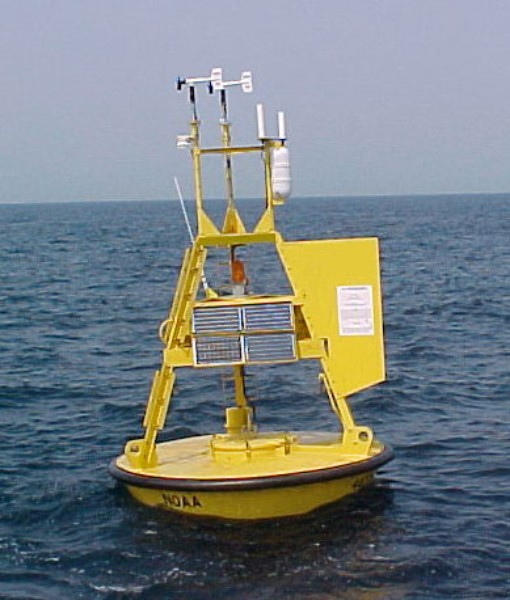

Qu'est-ce qu'on fait ici ?
- Technologie
- Cas d'utilisation
- Retour d'expérience
Apache Cassandra
#Elastic #NoSQL #Scalability #Peer to Peer #Large row #Replication #High Availability #Decentralized #Performant #Fault tolerant
Cluster

Partitionnement
Fournisseur de données météo
 |
 |
- Divers capteurs ⇒ Données hétérogènes
- Large couverture ⇒ Données nombreuses
- Longue conservation ⇒ Données très nombreuses
Contexte

Principales requêtes
- Quelles sont les données reçues hier dans le bassin grenoblois ? 70 %
- Quelles sont les données reçues hier depuis une station donnée? 30 %
Clef primaire
- PARTITION KEY: localisation de la partition
- CLUSTERING KEY: identification au sein de la partition
// Implémentation
CREATE TABLE station (
zone text,
epochDay int,
station_id text,
event_time timestamp,
sensor1 sensor,
PRIMARY KEY((zone, epochDay), station_id, event_time)
);Requêtes
SELECT *
FROM station
WHERE zone = 'ZONE1'
AND epochDay = 1234
AND station_id = 'station1'
AND event_time = 123456789; // -> OK
SELECT *
FROM station
WHERE zone = 'ZONE1'
AND station_id = 'station1'
AND event_time = 123456789; // -> KO
Clef de partitionnement
- Doit être invariable et déductible
- Doit discriminer
- Devrait être métier
Difficulté de connaître les requêtes à l'avance
- Monitorer: usages, performances, shards
- Rester ouvert aux changements
- Toujours respecter les contraintes de clé primaire
Données des stations
- grand nombre de capteurs différents
- stockage d'image

Structure d'une table
Stocker les données de chaque capteurs dans une colonne
- 2 milliards de cellules par partition
- 2Gio par cellule
- données complexes ⇒ User Defined Type
User Defined Type
CREATE TYPE sensor (
pressure int,
hygrometry int
);
CREATE TABLE station (
zone text,
epochDay int,
station_id text,
event_time timestamp,
sensor1 sensor,
PRIMARY KEY((zone, epochDay), station_id, event_time)
);
User Defined Type
INSERT INTO mykeyspace.stations (zone, epochDay, station_id,
event_time)
VALUES (
'A',
15,
'station456',
123456789,
{'pressure':12,'hygrometry':4}
);
Déploiement
- Haute disponibilité
-
Gros volume de données
- Nombreuses stations (~1000)
- Relevés réguliers (~1 h)
- Stockage durable (~10 ans)
Cluster

Cluster

- Apache Cassandra n'est pas élastique !
- 1 seul nœud c'est mal!
- Beaucoup de ressources
- Master/Master ? P2P !
Consistance des données
ONEQUORUMALL- versions locales au DC, ex:
LOCAL_QUORUM
Qualité de la donnée
-
Normalisation des données
- Alignement, ajustements, corrections
-
Données de plus haut niveau
- Analyse, synthèse
Pre-processing
- avant insertion dans Cassandra
- hors-contexte
⇒ TRIGGER ?
Trigger
CREATE TRIGGER myTrigger ON mykeyspace.stations
USING 'com.viseo.techanhour.CassandraTrigger';
package com.viseo.techanhour;
import org.apache.cassandra.triggers.ITrigger;
public class CassandraTrigger implements ITrigger {
@Overrides
public Collection<Mutation> augment(Partition update) {
//...
}
}
Batch processing
- en arrière-plan
- échantillons, vue d'ensemble
- affinage des données
Requêter autrement
- Accéder à tous les relevés dans une certaine zone
Vue matérialisée
CREATE MATERIALIZED VIEW station_by_type
AS SELECT type, zone, station_id
FROM station
WHERE type IS NOT NULL
PRIMARY KEY (type, zone)
WITH comment = 'Based on table station' ;
Index externe
- Elastic Search, Apache Solr, Apache Lucene, ...
- Neo4j
- Limites des clés de Cassandra
Vous en voulez plus ?
Vous en voulez plus ?
Vous en voulez plus ?
Vous en voulez plus ?

Vous en voulez plus ?
Résultat

-
Cours gratuits en ligne
https://academy.datastax.com/courses -
DataStax Days Paris 2016
http://blog.viseo-bt.com/datastax-day-paris-2016/
Gros poissons !
 |
 |
|
 |
 |
Questions

Merci !
Au prochain épisode...